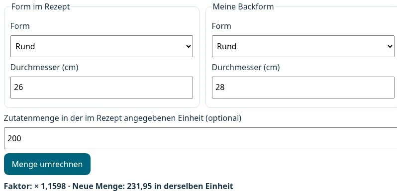

Backform umrechnen und Zutatenmengen anpassen
Der Toolya Backform-Rechner passt ein Kuchenrezept an eine andere Formgröße an. Du gibst die Maße der Backform im Rezept und deiner eigenen Form ein. Der Rechner vergleicht die Flächen und zeigt, mit welchem Faktor du die Zutatenmengen multiplizierst.
Jetzt Backform umrechnenDie Basisrechnung funktioniert ohne Anmeldung. Rezepte speicherst du im Tool mit deinem Konto.

Backform-Rechner ohne Anmeldung
Miss die Form innen. Bei runden Formen gib im ersten Feld den Durchmesser ein. Bei eckigen Formen gib Länge und Breite ein.
Rechenbeispiel als Bildschirmfoto ansehen

Umrechnungsfaktoren für Springformen
| Von / auf | 18 cm | 20 cm | 22 cm | 24 cm | 26 cm | 28 cm | 30 cm |
|---|---|---|---|---|---|---|---|
| 18 cm | 1,00 | 1,23 | 1,49 | 1,78 | 2,09 | 2,42 | 2,78 |
| 20 cm | 0,81 | 1,00 | 1,21 | 1,44 | 1,69 | 1,96 | 2,25 |
| 22 cm | 0,67 | 0,83 | 1,00 | 1,19 | 1,40 | 1,62 | 1,86 |
| 24 cm | 0,56 | 0,69 | 0,84 | 1,00 | 1,17 | 1,36 | 1,56 |
| 26 cm | 0,48 | 0,59 | 0,72 | 0,85 | 1,00 | 1,16 | 1,33 |
| 28 cm | 0,41 | 0,51 | 0,62 | 0,73 | 0,86 | 1,00 | 1,15 |
| 30 cm | 0,36 | 0,44 | 0,54 | 0,64 | 0,75 | 0,87 | 1,00 |
Teile den neuen Durchmesser durch den alten und quadriere das Ergebnis. Die Tabelle rundet auf zwei Nachkommastellen. Bei Muffinformen hängt die benötigte Teigmenge von Anzahl und Größe der Mulden ab. Prüfe die Füllhöhe und orientiere dich bei der Backzeit am Rezept.
Ein ganzes Rezept im Tool umrechnen
Backform aus dem Rezept eingeben
Wähle unter Original-Form im Rezept den Formtyp. Bei einer Springform gibst du den Durchmesser ein. Bei einer eckigen Form oder Kastenform sind Länge und Breite gefragt. Verwende die Innenmaße in Zentimetern.
Deine gewünschte Backform auswählen
Wähle unter Zielform deine Backform und trage ihre Maße ein. Wenn du den Teig im ausführlichen Rechner auf zwei runde Formen verteilen willst, kannst du die beiden Durchmesser im Modus für zwei Formen eingeben. Der Faktor gilt dann für die gesamte Teigmenge.
Zutaten zeilenweise eingeben
Schreibe jede Zutat in eine eigene Zeile. Beginne mit der Menge, etwa 200 g Mehl oder 100 ml Milch. Wähle Rezept umrechnen & Analysieren und prüfe anschließend die Zutatenliste. Ganze Eier werden gerundet.
Geschätzte Backzeit prüfen
Wenn du auch die Backzeit abschätzen möchtest, ergänze die Angaben aus dem Rezept. Die angezeigte Zeit dient zur Orientierung. Wie lange der Kuchen tatsächlich braucht, hängt unter anderem von Ofen, Form und Teighöhe ab.
Beispiel: Springform von 20 auf 28 cm umrechnen
Bei zwei runden Formen ergibt sich der Faktor aus dem Quadrat des Durchmesserverhältnisses. Für eine Springform mit 20 cm im Rezept und eine Zielform mit 28 cm rechnest du (28 ÷ 20)² = 1,96.
Aus 200 g Mehl werden 392 g. Aus 100 ml Milch werden 196 ml. Mit dem gleichen Faktor kannst du die übrigen Zutaten umrechnen.
Springform von 26 auf 28 cm umrechnen
Für einen Wechsel von 26 auf 28 cm brauchst du rund 16 % mehr Teig, wenn er in der neuen Form gleich hoch sein soll. Multipliziere die Zutatenmengen mit (28 ÷ 26)² ≈ 1,1598. Aus 200 g Mehl werden rund 232 g, aus 150 ml Milch rund 174 ml.
Für den umgekehrten Wechsel von 28 auf 26 cm rechnest du (26 ÷ 28)² ≈ 0,8622. Aus 200 g Mehl werden dann rund 172 g.
Springform von 26 auf 24 cm umrechnen
Multipliziere die Zutatenmengen mit (24 ÷ 26)² ≈ 0,852. Aus 250 g Mehl werden rund 213 g, aus 150 ml Milch rund 128 ml. Runde erst nach dem Multiplizieren oder lass die Mengen im Rechner berechnen.
Zwischen Kastenform, Springform und Backblech umrechnen
Teile bei ähnlicher Teighöhe die Grundfläche der Zielbackform durch die Grundfläche der Rezeptform. Miss bei beiden Formen innen.
- Kastenform auf Springform. Eine gerade Kastenform mit 25 × 10 cm hat 250 cm² Grundfläche. Eine Springform mit 20 cm Durchmesser hat rund 314 cm². Der Faktor ist etwa 1,26. Aus 200 g Mehl werden rund 251 g.
- Springform auf Backblech. Eine Springform mit 26 cm Durchmesser hat rund 531 cm² Grundfläche. Ein Blech mit 30 × 40 cm Innenmaß hat 1.200 cm². Der Faktor ist etwa 2,26. Aus 200 g Mehl werden rund 452 g.
Bei einer schrägwandigen Kastenform ist der Flächenvergleich eine Näherung. Die tatsächliche Füllhöhe hängt von der Form ab. Die Backzeit lässt sich nicht mit dem Zutatenfaktor umrechnen.
Welche Maße brauche ich für meine Backform?
Für runde und gerade rechteckige Formen kannst du die Grundflächen vergleichen, wenn die Teighöhe ähnlich bleiben soll. Miss jeweils innen. Bei stark schrägen Wänden oder einem Mittelsteg ist die Grundfläche nur eine Näherung.
| Backform | Innenmaß | Fläche oder Anhaltspunkt |
|---|---|---|
| Springform | Durchmesser | Kreisfläche: π × (Durchmesser ÷ 2)² |
| Rechteckige Form | Länge und Breite | Länge × Breite |
| Gugelhupfform | Fassungsvermögen bis zu einer vergleichbaren Füllhöhe | Mittelsteg und schräge Wände verändern das Volumen |
Als Erstes kannst du die Innenmaße im Backform-Rechner auswählen.
Häufige Fragen zum Backform-Rechner
Kann ich eine Springform in eine Kastenform umrechnen?
Ja. Gib den Durchmesser der Springform sowie Länge und Breite der Kastenform ein. Der Flächenvergleich setzt eine ähnliche Teighöhe voraus. Prüfe vor dem Backen, ob genug Platz in der Form bleibt.
Wie genau ist die Umrechnung für eine Gugelhupfform?
Der Rechner verwendet näherungsweise die Kreisfläche aus dem Durchmesser. Der Mittelsteg und die Form der Wände werden in dieser Berechnung nicht berücksichtigt. Prüfe deshalb besonders die Füllmenge.
Kann ich nur den Umrechnungsfaktor ablesen?
Ja. Sobald Originalform und Zielform eingestellt sind, kannst du den angezeigten Faktor ablesen und die Zutaten von Hand multiplizieren.